The film of the lab report The Fleet as the Hearth: the fleet's heat, three mesh radios and the house as one block diagram, walked arrow by arrow, from the outside in. No room temperature is read yet, the radios gave no thermometer, the CPU figures are one step each and no controller is built; the film says what the report says and no more. The film is 10:13 long and has no sound. Its narration, 1,358 words, scrolls in the corner at 150 words a minute, the word to be spoken lit, for whoever reads it aloud; the same words are the film's captions. Under it, every one of its 16 arrows as a still, with what moves along it, why, the rule at the border, and what is said.
Each card is one step of the film. The picture is the whole diagram at that moment, with the arrow lit and the small map in its corner showing where the step sits. The button plays that step in the film above.
1. The machines' side
the queue→a CPUa step
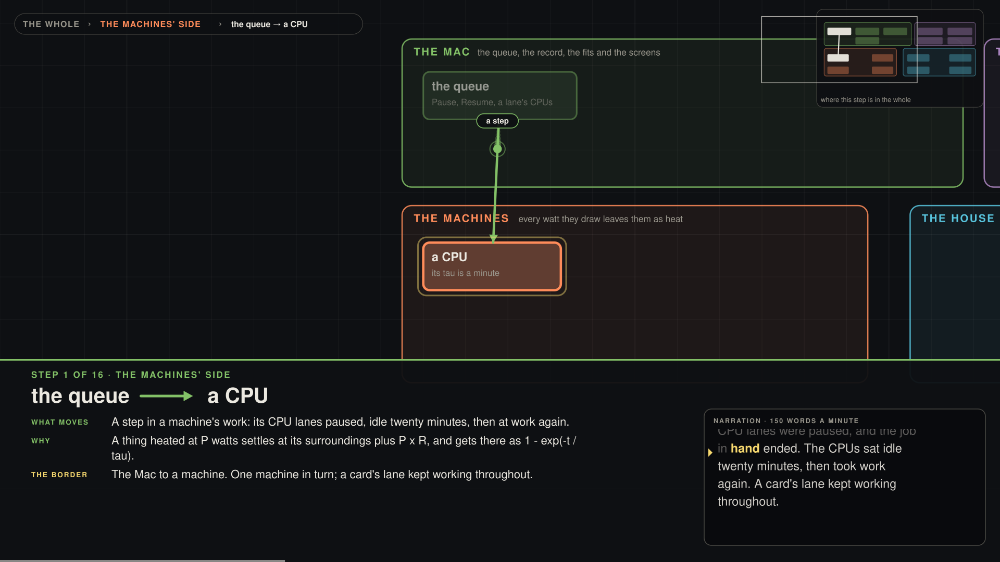
What moves
A step in a machine's work: its CPU lanes paused, idle twenty minutes, then at work again.
Why
A thing heated at P watts settles at its surroundings plus P x R, and gets there as 1 - exp(-t / tau).
The border
The Mac to a machine. One machine in turn; a card's lane kept working throughout.
Narration
The queue's own buttons made the steps. For each machine in turn its CPU lanes were paused, and the job in hand ended. The CPUs sat idle twenty minutes, then took work again. A card's lane kept working throughout.
2. The machines' side
a CPU→the collectora temperature
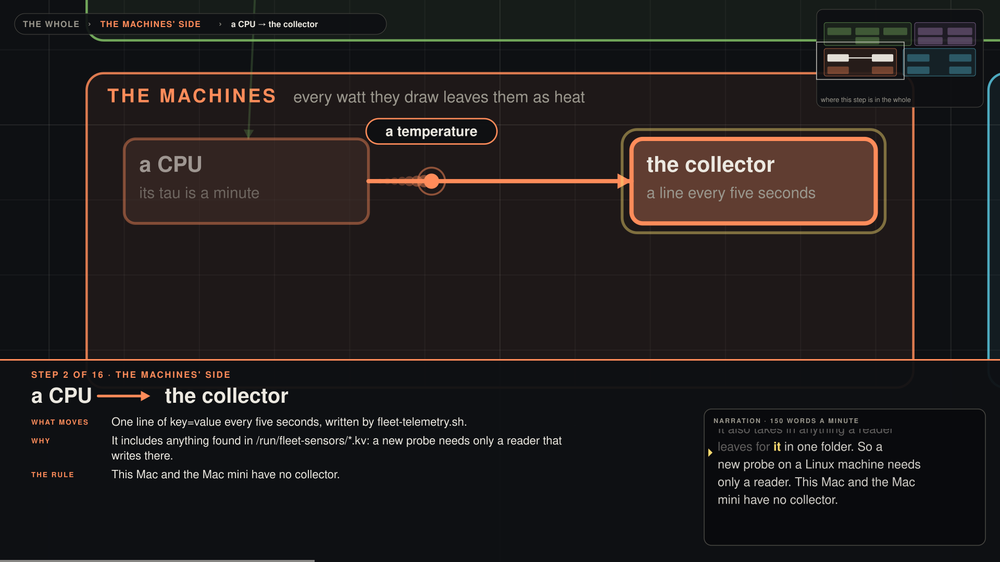
What moves
One line of key=value every five seconds, written by fleet-telemetry.sh.
Why
It includes anything found in /run/fleet-sensors/*.kv: a new probe needs only a reader that writes there.
The rule
This Mac and the Mac mini have no collector.
Narration
On each Linux machine a collector writes one line every five seconds. It also takes in anything a reader leaves for it in one folder. So a new probe on a Linux machine needs only a reader. This Mac and the Mac mini have no collector.
3. The machines' side
the collector→the recordthe new lines
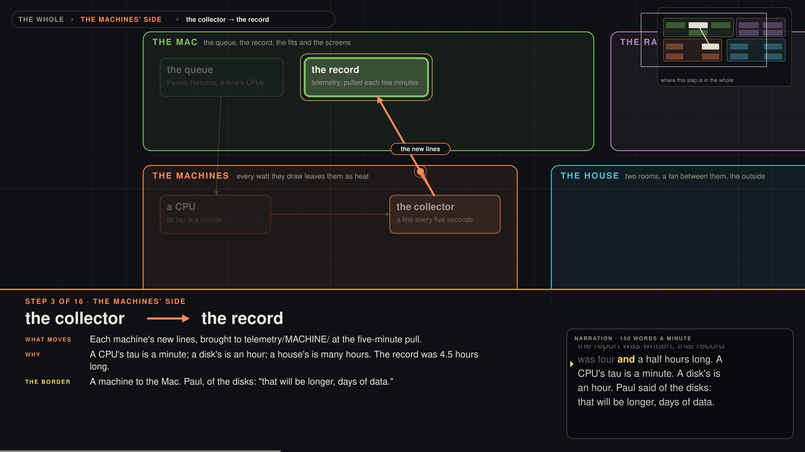
What moves
Each machine's new lines, brought to telemetry/MACHINE/ at the five-minute pull.
Why
A CPU's tau is a minute; a disk's is an hour; a house's is many hours. The record was 4.5 hours long.
The border
A machine to the Mac. Paul, of the disks: "that will be longer, days of data."
Narration
Every five minutes the Mac pulls the new lines into its record. When the report was written, that record was four and a half hours long. A CPU's tau is a minute. A disk's is an hour. Paul said of the disks: that will be longer, days of data.
4. The machines' side
the record→the fitsa held step
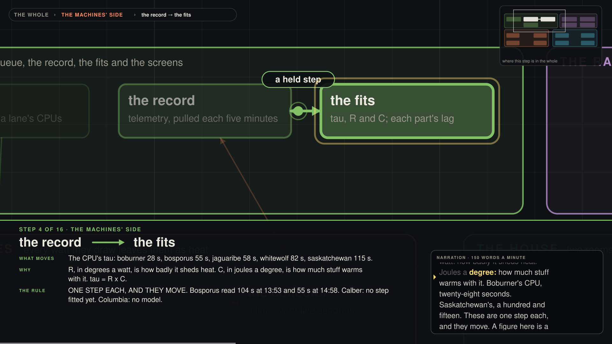
What moves
The CPU's tau: boburner 28 s, bosporus 55 s, jaguaribe 58 s, whitewolf 82 s, saskatchewan 115 s.
Why
R, in degrees a watt, is how badly it sheds heat. C, in joules a degree, is how much stuff warms with it. tau = R x C.
The rule
ONE STEP EACH, AND THEY MOVE. Bosporus read 104 s at 13:53 and 55 s at 14:58. Calber: no step fitted yet. Columbia: no model.
Narration
From each step, three numbers. Tau: how long the part takes. Degrees a watt: how badly it sheds heat. Joules a degree: how much stuff warms with it. Boburner's CPU, twenty-eight seconds. Saskatchewan's, a hundred and fifteen. These are one step each, and they move. A figure here is a first reading, good to a factor of two.
5. The machines' side
the wall watts→a disk, a boardthe soak
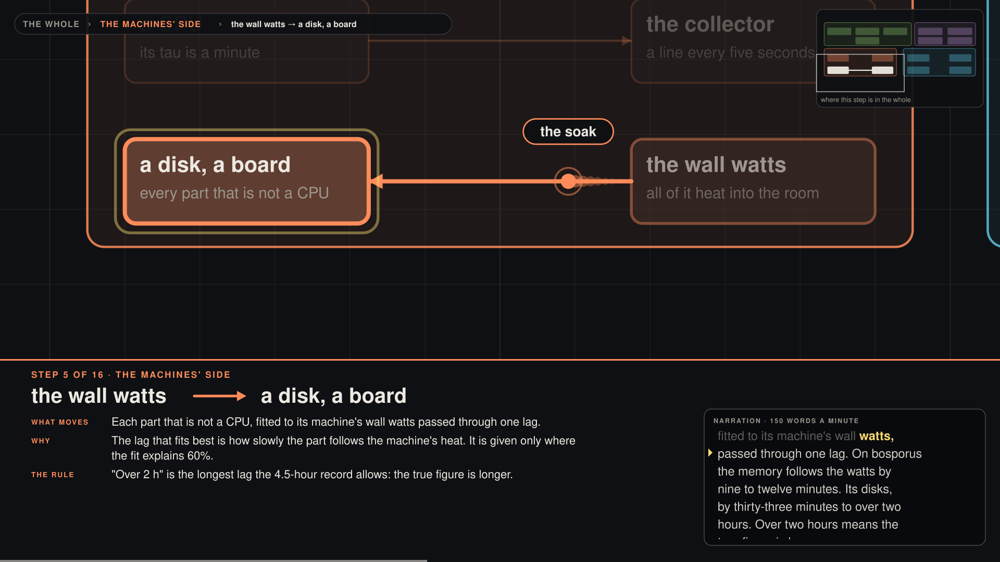
What moves
Each part that is not a CPU, fitted to its machine's wall watts passed through one lag.
Why
The lag that fits best is how slowly the part follows the machine's heat. It is given only where the fit explains 60%.
The rule
"Over 2 h" is the longest lag the 4.5-hour record allows: the true figure is longer.
Narration
A disk never gets a clean step. So each part that is not a CPU is fitted to its machine's wall watts, passed through one lag. On bosporus the memory follows the watts by nine to twelve minutes. Its disks, by thirty-three minutes to over two hours. Over two hours means the true figure is longer.
6. The machines' side
the fits→the screenstau, R, C, the lags
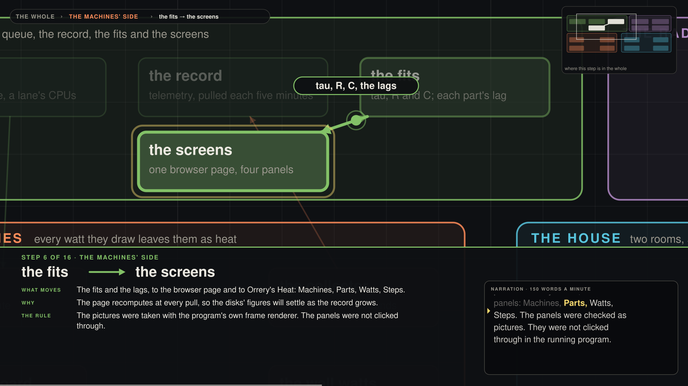
What moves
The fits and the lags, to the browser page and to Orrery's Heat: Machines, Parts, Watts, Steps.
Why
The page recomputes at every pull, so the disks' figures will settle as the record grows.
The rule
The pictures were taken with the program's own frame renderer. The panels were not clicked through.
Narration
All of it is drawn in two places. One browser page, made at every pull. And Orrery's Heat, four panels: Machines, Parts, Watts, Steps. The panels were checked as pictures. They were not clicked through in the running program.
7. The three radios
this Mac's USB→the first T-Echosensor list
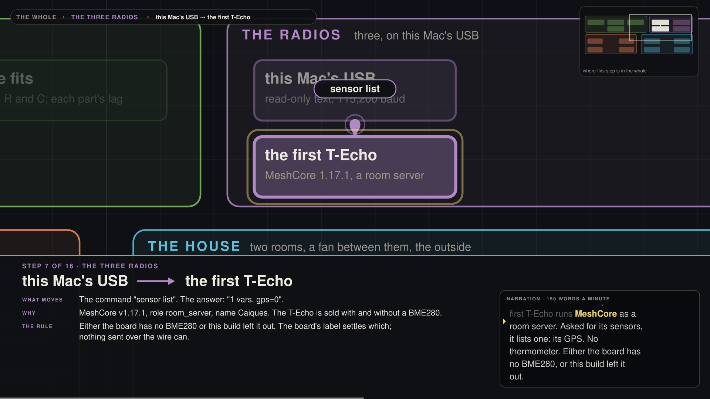
What moves
The command "sensor list". The answer: "1 vars, gps=0".
Why
MeshCore v1.17.1, role room_server, name Caiques. The T-Echo is sold with and without a BME280.
The rule
Either the board has no BME280 or this build left it out. The board's label settles which; nothing sent over the wire can.
Narration
Each radio was opened at a hundred and fifteen thousand two hundred baud, and sent read-only text. The first T-Echo runs MeshCore as a room server. Asked for its sensors, it lists one: its GPS. No thermometer. Either the board has no BME280, or this build left it out.
8. The three radios
this Mac's USB→the second T-Echotext, and one frame
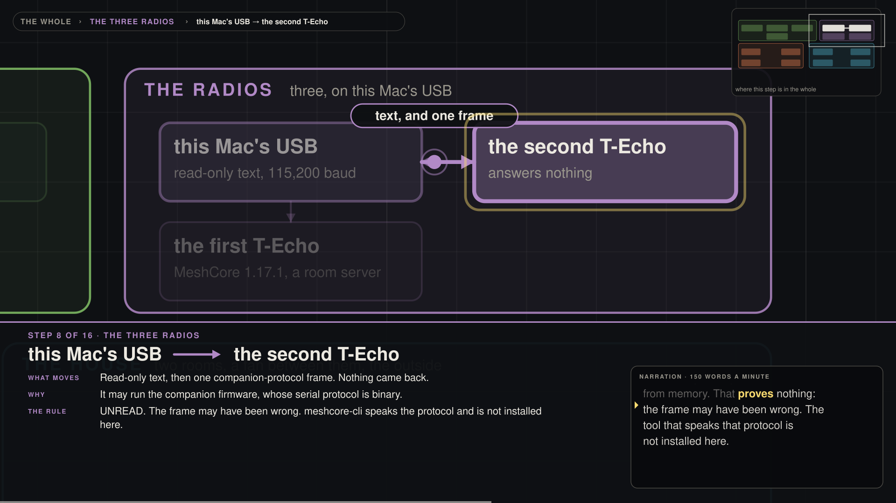
What moves
Read-only text, then one companion-protocol frame. Nothing came back.
Why
It may run the companion firmware, whose serial protocol is binary.
The rule
UNREAD. The frame may have been wrong. meshcore-cli speaks the protocol and is not installed here.
Narration
The second T-Echo answers nothing. Not to text, and not to one frame of the companion protocol, sent from memory. That proves nothing: the frame may have been wrong. The tool that speaks that protocol is not installed here.
9. The three radios
this Mac's USB→the T-Deckhelp
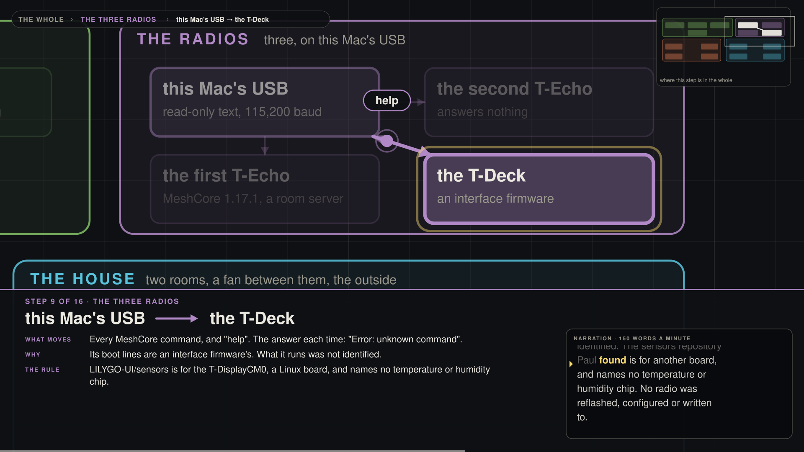
What moves
Every MeshCore command, and "help". The answer each time: "Error: unknown command".
Why
Its boot lines are an interface firmware's. What it runs was not identified.
The rule
LILYGO-UI/sensors is for the T-DisplayCM0, a Linux board, and names no temperature or humidity chip.
Narration
The T-Deck answers every MeshCore command, and help, with: unknown command. What it runs was not identified. The sensors repository Paul found is for another board, and names no temperature or humidity chip. No radio was reflashed, configured or written to.
10. The house
the wall watts→room oneheat
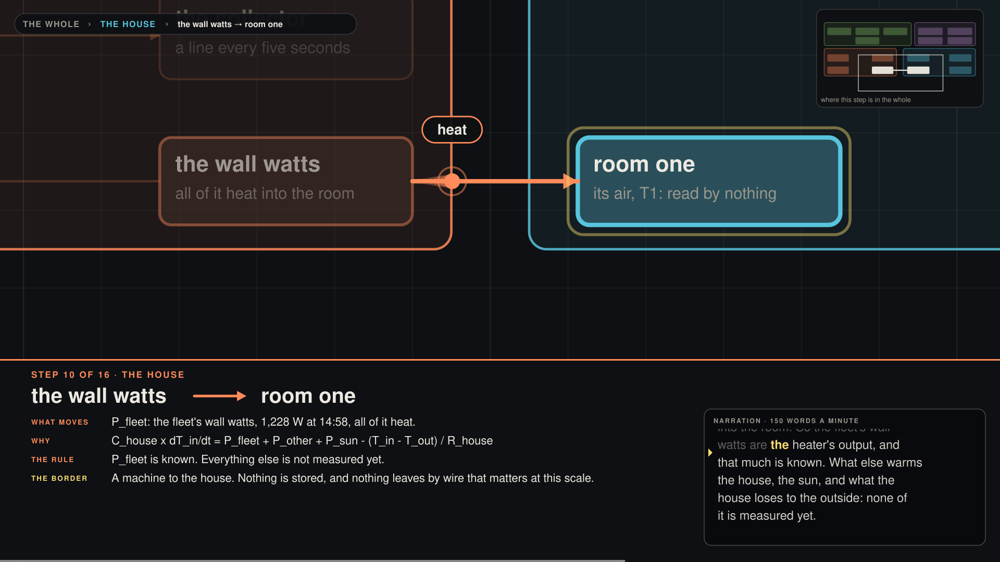
What moves
P_fleet: the fleet's wall watts, 1,228 W at 14:58, all of it heat.
P_fleet is known. Everything else is not measured yet.
The border
A machine to the house. Nothing is stored, and nothing leaves by wire that matters at this scale.
Narration
Now the house. Every watt a computer draws leaves it as heat into the room. So the fleet's wall watts are the heater's output, and that much is known. What else warms the house, the sun, and what the house loses to the outside: none of it is measured yet.
11. The house
room one→room twoair, by the fan
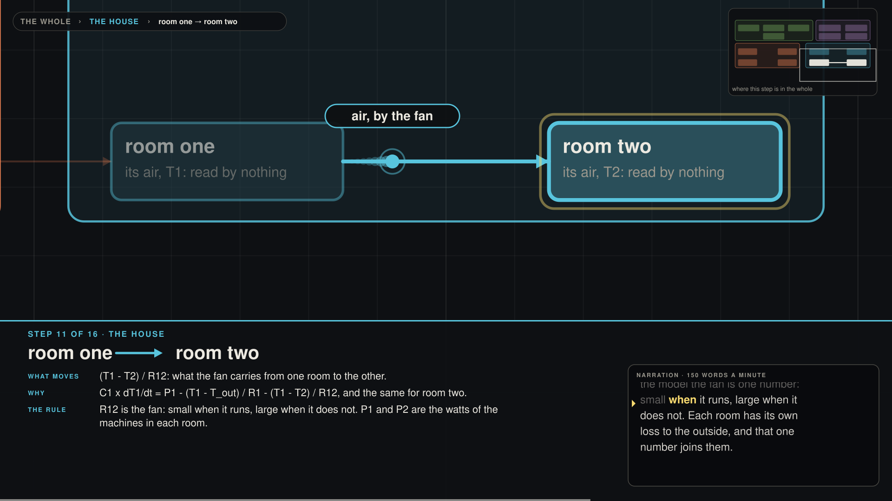
What moves
(T1 - T2) / R12: what the fan carries from one room to the other.
Why
C1 x dT1/dt = P1 - (T1 - T_out) / R1 - (T1 - T2) / R12, and the same for room two.
The rule
R12 is the fan: small when it runs, large when it does not. P1 and P2 are the watts of the machines in each room.
Narration
There are two rooms, and a fan between them mixing their air. In the model the fan is one number: small when it runs, large when it does not. Each room has its own loss to the outside, and that one number joins them.
12. The house
room one→the outsidethe loss
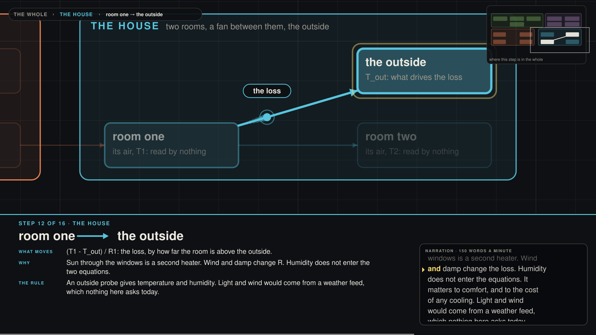
What moves
(T1 - T_out) / R1: the loss, by how far the room is above the outside.
Why
Sun through the windows is a second heater. Wind and damp change R. Humidity does not enter the two equations.
The rule
An outside probe gives temperature and humidity. Light and wind would come from a weather feed, which nothing here asks today.
Narration
A room loses heat by how far it is above the outside. Sun through the windows is a second heater. Wind and damp change the loss. Humidity does not enter the equations. It matters to comfort, and to the cost of any cooling. Light and wind would come from a weather feed, which nothing here asks today.
13. The house
the first T-Echo→a thermometera sensor, four wires
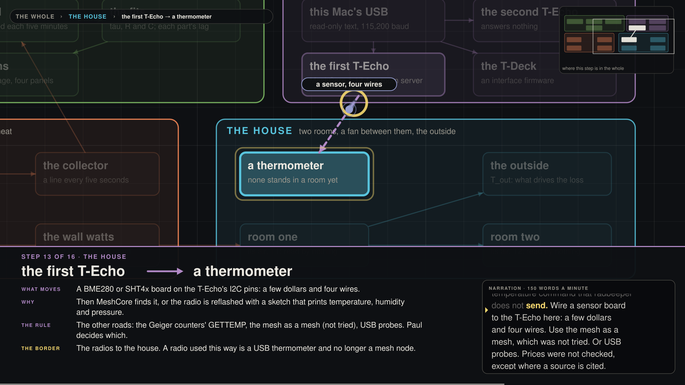
What moves
A BME280 or SHT4x board on the T-Echo's I2C pins: a few dollars and four wires.
Why
Then MeshCore finds it, or the radio is reflashed with a sketch that prints temperature, humidity and pressure.
The rule
The other roads: the Geiger counters' GETTEMP, the mesh as a mesh (not tried), USB probes. Paul decides which.
The border
The radios to the house. A radio used this way is a USB thermometer and no longer a mesh node.
Narration
How to get a thermometer, soonest first. Ask saskatchewan's two Geiger counters, which have a temperature command that radbeeper does not send. Wire a sensor board to the T-Echo here: a few dollars and four wires. Use the mesh as a mesh, which was not tried. Or USB probes. Prices were not checked, except where a source is cited.
14. The house
a thermometer→the collectorroom.NAME.c
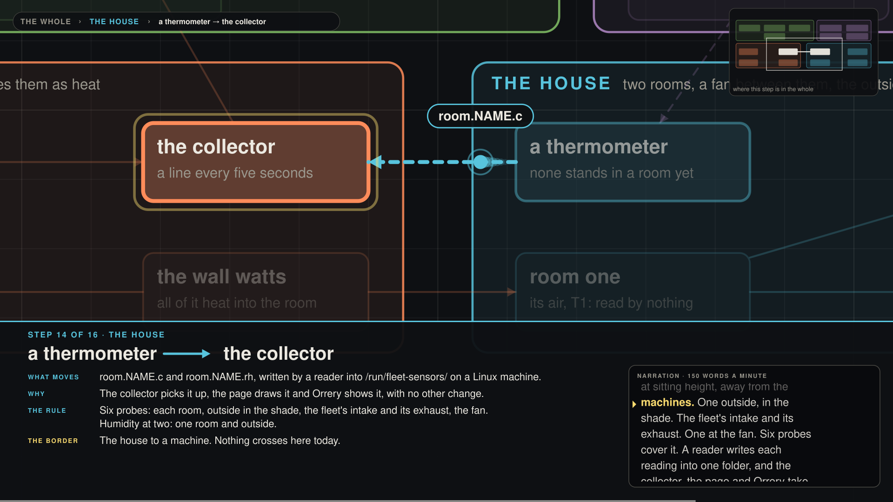
What moves
room.NAME.c and room.NAME.rh, written by a reader into /run/fleet-sensors/ on a Linux machine.
Why
The collector picks it up, the page draws it and Orrery shows it, with no other change.
The rule
Six probes: each room, outside in the shade, the fleet's intake and its exhaust, the fan. Humidity at two: one room and outside.
The border
The house to a machine. Nothing crosses here today.
Narration
Where to put them, for two rooms mixed by a fan. One in each room, at sitting height, away from the machines. One outside, in the shade. The fleet's intake and its exhaust. One at the fan. Six probes cover it. A reader writes each reading into one folder, and the collector, the page and Orrery take it up with no other change.
15. The house
the queue→the wall wattsa step of about 1.2 kW
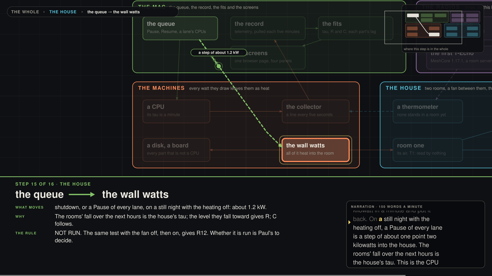
What moves
shutdown, or a Pause of every lane, on a still night with the heating off: about 1.2 kW.
Why
The rooms' fall over the next hours is the house's tau; the level they fall toward gives R; C follows.
The rule
NOT RUN. The same test with the fan off, then on, gives R12. Whether it is run is Paul's to decide.
Narration
The fleet is its own step generator. The queue can drop a kilowatt in a minute and put it back. On a still night with the heating off, a Pause of every lane is a step of about one point two kilowatts into the house. The rooms' fall over the next hours is the house's tau. This is the CPU step test again, with a house for the part. It has not been run.
16. The house
a thermometer→the queuea room's temperature
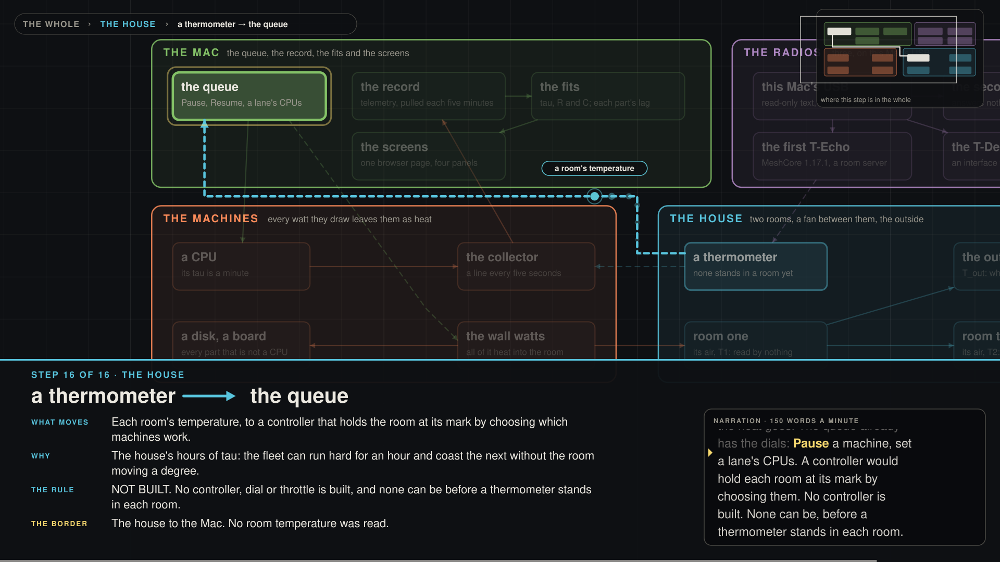
What moves
Each room's temperature, to a controller that holds the room at its mark by choosing which machines work.
Why
The house's hours of tau: the fleet can run hard for an hour and coast the next without the room moving a degree.
The rule
NOT BUILT. No controller, dial or throttle is built, and none can be before a thermometer stands in each room.
The border
The house to the Mac. No room temperature was read.
Narration
With those numbers known, which machines work is a choice of where the heat goes. The queue already has the dials: Pause a machine, set a lane's CPUs. A controller would hold each room at its mark by choosing them. No controller is built. None can be, before a thermometer stands in each room.
How the film is made
The film is one file of words and positions (storyboard.json) drawn by three scripts: tools/report/film.py, what any such film shares, and tools/report/process_film.py, how a block diagram is walked; and tools/report/hearth_film.py, this report's own opening and its two columns of what was done and what was not. Every number in it is the report's.
The words first
Each scene is exactly as long as its narration at 150 words a minute, with a breath before and after. A mark in the narration is a cue, and the picture's moves are written against cues, so the picture can never run ahead of what is said.
One stage
The diagram is drawn once, every block in its place for the whole film. Scenes move a camera over it and change what is lit. The viewer learns the map once and is never shown a second one.
A function of time
Every frame is computed from its time alone; nothing accumulates. A property is a tween between two times on an easing curve. So any frame renders by itself, a still for this page is the same call as a frame of the film, and the frames render in any order: here by two processes, the Mac being the fleet's coordinator.
Gather, go, land
A move has three parts. The source dips as the token sets out, the token eases away and eases in with a trail behind it, the destination swells as it arrives. One thing moves at a time; a row of words rises into place only while nothing else is moving.
The border
Where an arrow leaves one territory a ring opens on the border, and the token takes the colour of the territory it enters: what crosses is no longer the first territory's.
The cold open
Before the title, a true thing that should not be possible: a fleet that puts 1,228 W into a house and writes down its own temperatures every five seconds, in a room whose air nothing reads; then why it matters (what a computation costs when the house wanted its heat); then the report's own picture of the Watts panel, and that three radios gave no thermometer.
Outside in
After the title it opens far off on the whole, names four territories, then the four borders and what crosses each, then goes inside: the machines' side, the three radios, and the house. Each step carries the path down to it in the top left and a small map of the whole in the top right, so no step is seen out of its place.
Done, and not done
Before the close, two columns: what was measured and built, and what was not. The room's temperature, the radios' thermometer and the controller are in the second.
Pace
A step runs 18 to 32 seconds: the camera arrives in a second and a half, the arrow draws, the token travels for 3.4 seconds and sets out again every 5.6 while the step is told; what moves appears at 2.8 seconds, why at 5, the rule at 7, the border at 8.